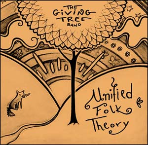

Folk fans will appreciate the varied American music traditions found on The Giving Tree Band’s double-CD set, “Unified Folk Theory.” The acoustic quartet from Chicago seamlessly combines their traditional folk style with plucky bluegrass, then tosses in a dose of early Bob Dylan for good measure.
Even better, the band’s on an eco-mission: the CDs were manufactured at the wind-powered Earthology Records using recycled materials; manufacturing and shipping pollutants are offset by planting 10 trees for every 1,000 CDs sold, and the band’s instruments are made of naturally fallen trees and recycled wood. The Giving Tree Band encourages a spirit of community through artful expression, with lyrics that give an uplifting boost to like-minded souls who care for the Earth.
To learn more or order the CDs, visit The Giving Tree Band.
|
 ANIA KLIMIUK The Giving Tree Band’s “Unified Folk Theory” is worth a listen. |
|
|